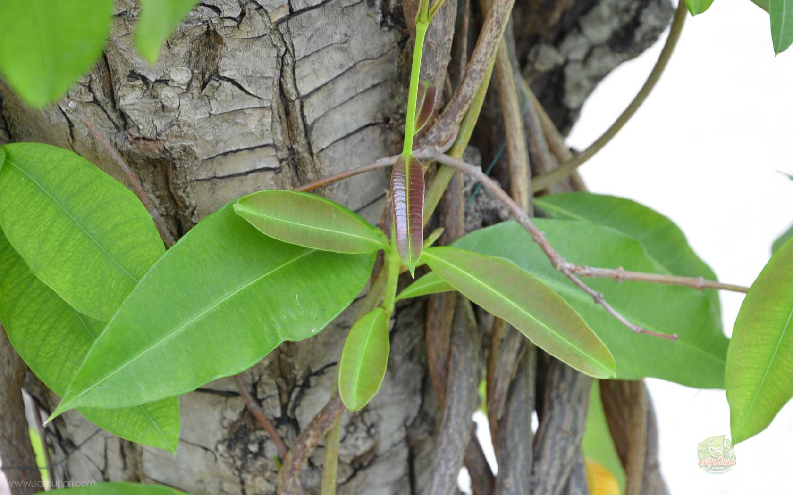
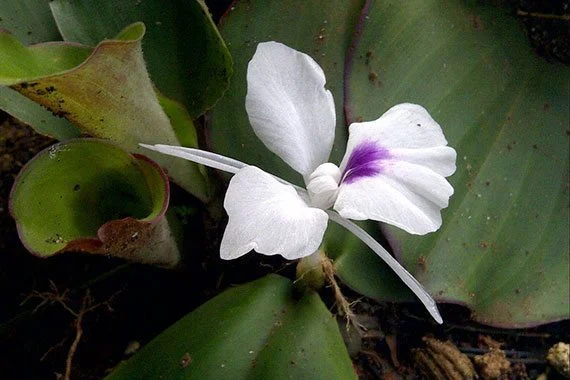

กรมการแพทย์แผนไทยและการแพทย์ทางเลือก
Department of thai traditional and alternative medicine
Call Center 02-5917007
22 สมุนไพรไทยที่เสี่ยงสูญพันธุ์
นายนันทศักดิ์ โชติชนะเดชาวงศ์ ผู้อำนวยการกองคุ้มครองภูมิปัญญาการแพทย์แผนไทยและพื้นบ้านไทย กรมพัฒนาการแพทย์แผนไทย
และการแพทย์ทางเลือก กระทรวงสาธารณสุข (สธ.) กล่าวว่า ขณะนี้มีสมุนไพรไทย 22 ชนิด ที่เสี่ยงอาจจะสูญพันธุ์ได้ ประกอบด้วย
1. ถั่วดินโคก หรือ พิษนาศน์
ที่มาของรูปมาจาก :
https://www.samunpri.com/พิษนาศน์
สรรพคุณ : ช่วยลดไข้ในเด็ก ใช้ต้มกับน้ำดื่มเป็นยาบำรุงน้ำนมของสตรี และใบนำมาฝนทาเป็นยาแก้ฝี
2. เทพทาโร

ที่มาของรูปจาก :
http://bowtaro.lnwshop.com/article/2/ต้นเทพทาโร-ใช้ประโยชน์อะไรได้บ้าง
สรรพคุณ : แก้ไข้หวัด แก้ไอ อาการไอเรื้อรัง ตัวร้อน ออกหัด เนื้อไม้ใช้ปรุงเป็นยาหอมลม รักษาท้องขึ้น อืดเฟ้อ จุกเสียด
3. มะตูมนิ่ม

ที่มาของรูปจาก :
https://www.matichonweekly.com/column/article_22535
สรรพคุณ : คนโบราณจะนำมาทำเป็นยาอายุวัฒนะ เพื่อบำรุงกำลัง บำรุงเพศ ชลอความแก่ ทำให้ผมหงอกช้า
โดยการนำมาสผมกับกล้วยน้ำไทและน้ำผึ้ง ปั้นเป็นลูกกอนรับประทาน เรียกตำรับยานี้ว่า “ลูกแปลกแม่”
4. มะหาด
ที่มาของรูปจาก :
https://www.sentangsedtee.com/health-beauty/article_47029
สรรพคุณ : แก่นมีสรรพคุณเป็นยาแก้ลม เปลือกต้นสดนำมาต้มกับน้ำกินเป็นยาแก้ไข้
5. เร่ว

ที่มาของรูปจาก :
http://www.thaicrudedrug.com/main.php?action=viewpage&pid=117
สรรพคุณ : ช่วยแก้อาการหืด,ไอ,คลื่นไส้อาเจียน รับประทานอาหารไม่ได้ ผลช่วยแก้เสมหะในลำคอ เมล็ดช่วยกัดเสมหะ
6. หัวร้อยรู

ที่มาของรูปจาก :
https://medthai.com/หัวร้อยรู/
สรรพคุณ : ช่วยบำรุงหัวใจ หัว ใช้ตำกินเป็นยาขับพยาธิ
7. กระทุ่มนา

ที่มาของรูปจาก :
https://www.samunpri.com/กระทุ่มนา/
สรรพคุณ : ช่วยลดความดันโลหิต ใบและเปลือกต้นต้มกินเป็นยาแก้ไข้ ใช้อมกลั้วคอแก้อาการอักเสบของเยื่อเมือกในปาก
8. ขันทองพยาบาท

ที่มาของรูปจาก :
https://arit.kpru.ac.th/ap2/local/?nu=pages&page_id=43&code_db=610010&code_type=01
สรรพคุณ :ใช้เป็นยาบำรุงเหงือก รักษาเหงือกอักเสบ ทำให้ฟัน เหงือกแข็งแรง ขับระดูร้าย แก้โรคตับ และถอนพิษ
9. จุกโรหินี
ที่มาของรูปจาก :
https://www.samunpri.com/จุกโรหินี/
สรรพคุณ : ผลนำมาต้มกับน้ำดื่ม จะช่วยลดระดับน้ำตาลในเลือดได้ ช่วยแก้อาการอ่อนเพลีย ช่วยบำรุงกำลัง รากนำมาเคี้ยวกับพลูช่วยแก้อาการไอ
10. ชะเอมไทย

ที่มาของรูปจาก :
https://medthai.com/ชะเอมไทย/
สรรพคุณ : เปลือกต้นใช้ต้มกับน้ำดื่มช่วยแก้อาการไอ หากอาการไม่ดีขึ้นให้รับประทานติดต่อกัน 2-4 วัน ช่วยขับเสมหะ แก้น้ำลายเหนียว
11. ชิงชี่

ที่มาของรูปจาก :
https://medthai.com/ชิงชี่/
สรรพคุณ : ใบนำมาต้มดื่มเป็นยาแก้ไข้ รากใช้เป็นยาขับปัสสาวะ ช่วยทำให้มดลูกเข้าอู่
12. ตับเต่า
ที่มาของรูปจาก :
https://thai-herbs.thdata.co/page/ตับเต่าน้อย/
สรรพคุณ : เปลือกใช้เป็นยารักษาโรครำมะนาด น้ำต้มจากแก่นและรากมีสรรพคุณเป็นยาบำรุงปอด
13. นางแย้มป่า

ที่มาของรูปจาก :
https://www.samunpri.com/นางแย้มป่า/
สรรพคุณ : รากนางแย้มป่าใช้ต้มเป็นยาแก้ไข้ นอกจากนี้ยังช่วยรักษาลำไส้อักเสบ ในตำรายาไทยใช้รากเป็นยาช่วยขับปัสสาวะ
14. ปลาไหลเผือก

ที่มาของรูปจาก :
https://khaolan.redcross.or.th/ปลาไหลเผือก/
สรรพคุณ : รากใช้เป็นยาบำรุงกำลัง บำรุงร่างกาย คนเดินป่านิยมกัน เพราะจะช่วยทำให้ร่างกายแข็งแรง ช่วยคลายอาการปวดเมื่อย รากใช้เป็นยาขับพยาธิ
15. พังคี

ที่มาของรูปจาก :
https://medthai.com/พังคี/
สรรพคุณ : รากพังคีช่วยแก้อาการจุกเสียด แก้ท้องอืด ท้องเฟ้อ ปวดท้อง รากใช้ตำประคบแก้อาการปวด
16. มะคังแดง

ที่มาของรูปจาก :
https://medthai.com/มะคังแดง/
สรรพคุณ : เนื้อไม้มีรสเย็นเฝื่อน ใช้ต้มกับน้ำดื่มเป็นยาแก้เลือดลมเดินไม่สะดวก แก้พิษโลหิตและน้ำเหลืองเปลือกต้นใช้ตำพอกแผลสดเพื่อห้ามเลือด
17. สะค้าน

ที่มาของรูปจาก :
https://www.matichonweekly.com/column/article_548784
สรรพคุณ : เครือ ใช้ประกอบอาหารช่วยเพิ่มรสเผ็ด ลำต้นใช้ใส่แกง ช่วยให้มีกลิ่นหอม
18. สารภีป่า
ที่มาของรูปจาก :
https://medthai.com/สารภีป่า/
สรรพคุณ : ดอกมีสรรพคุณเป็นยาบำรุงหัวใจ ตำรายาไทยจะใช้เปลือกและดอกเป็นยาแก้ไข้ ดอกมีสารช่วยขยายหลอดลม และช่วยขับลม เปลือกและดอกมีสรรพคุณเป็นยาแก้บิด
19. อบเชยไทย

ที่มาของรูปจาก :
https://www.palangkaset.com/ผักเศรษฐกิจ/อบเชย-1/
สรรพคุณ :เป็นยาร้อนออกฤทธิ์ต่อไต ม้าม และกระเพาะปัสสาวะ ใช้เป็นยาบำรุงร่างกาย ทำให้ร่างกายอบอุ่น ช่วยกระจายความเย็นในร่างกาย ทำให้เลือดหมุนเวียนดี
20. เฉียงพร้านางแอ
ที่มาของรูปจาก :
https://www.siamplants.com/2022/05/carallia-brachiata.html
สรรพคุณ : ลำต้นใช้ต้มน้ำดื่มช่วยบำรุงร่างกาย ทำให้เจริญอาหารหรือใช้เป็นยาเจริญอาหารสำหรับสตรีหลังคลอดบุตร
21. เถาเอ็นอ่อน

ที่มาของรูปจาก :
https://www.samunpri.com/เถาเอ็นอ่อน/
สรรพคุณ : เป็นยาเย็น มีพิษ ออกฤทธิ์ต่อหัวใจและตับ ใช้เป็นยาฟอกเลือด ขับลมในลำไส้และในกระเพาะอาหาร ทำให้ผายลมและเรอ ช่วยแก้อาการจุกเสียดแน่นท้อง
22. เปราะหอม

ที่มาของรูปจาก :
https://medthai.com/เปราะหอม/
สรรพคุณ :ใช้เป็นยาแก้ปวดศีรษะ คลายเครียด ใช้เป็นยาบำรุงหัวใจ บำรุงประสาท ด้วยการใช้หัวผสมลงในยาหอม
หัวเปราะหอมนำมาต้มหรือชงกิน จะช่วยในการนอนหลับได้เป็นอย่างดี และยังช่วยลดความเครียดได้อีกด้วย
“ตามปกติแต่ละจังหวัดจะมีการจดทะเบียนรายชื่อสมุนไพรที่มีอยู่ในจังหวัดนั้นๆ แบ่งออกเป็น 3 ประเภท คือ 1. สมุนไพรเพื่อการศึกษา
2. สมุนไพรพืชเศรษฐกิจ และ 3. สมุนไพรเสี่ยงอาจสูญพันธุ์ โดยจะมีคณะผู้เชี่ยวชาญเข้ามาจัดทำข้อมูลของสมุนไพรทั้ง 3 ประเภท
จากนั้นได้เลือกออกมาเป็น 22 ชนิด ที่เสี่ยงอาจจะสูญพันธุ์ เนื่องจากเป็นสมุนไพรที่เติบโตช้า เมื่อจะใช้ต้องใช้ทั้งต้น บางชนิดใช้ทั้งราก
และต้องใช้บ่อยจึงจะสามารถรักษาอาการได้” นายนันทศักดิ์ กล่าว
นายนันทศักดิ์ กล่าวว่า คณะกรรมการคุ้มครองและส่งเสริมภูมิปัญญาการแพทย์แผนไทยได้ประชุมหารือกัน โดยเลือกสมุนไพร 6 ชนิด
จาก 22 ชนิดขึ้นมา คือ ถั่วดินโคก หรือ พิษนาศน์ เทพทาโร มะตูมนิ่ม มะหาด เร่ว และ หัวร้อยรู นอกจากนี้ ยังเสนอสมุนไพร “กระวาน”
ขึ้นมาเป็นพิเศษด้วยอีกชนิดหนึ่ง เพื่อประกาศคุ้มครองและเป็นสมุนไพรที่ต้องควบคุม โดยหากใครมีสมุนไพร 7 ตัวนี้อยู่ในครอบครองไม่ได้ถือว่า
มีความผิด เพียงแต่ต้องแจ้งมาทาง สธ. ให้รับทราบว่ามีอยู่เท่าใด เพื่อที่จะจัดทำแผนส่งเสริมการปลูกต่อไป เช่น บริษัทใดมีสมุนไพร 7 นี้อยู่
ใช้ผลิตยาไปเท่าใด ต้องปลูกทดแทนเท่าใด เพื่อไม่ให้สูญพันธุ์ เป็นต้น